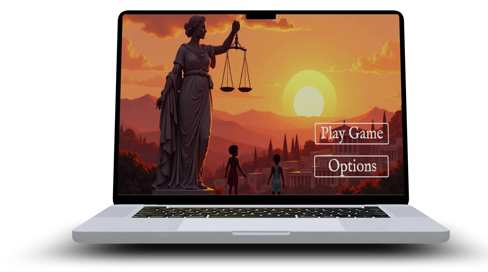
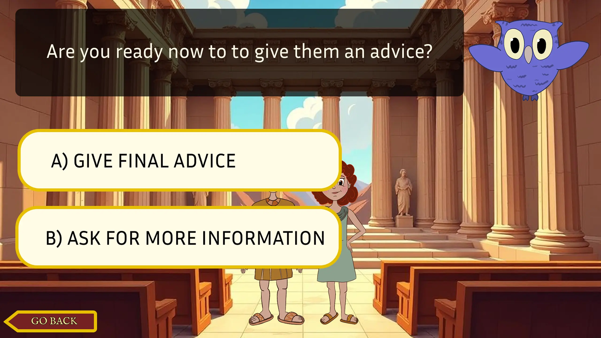
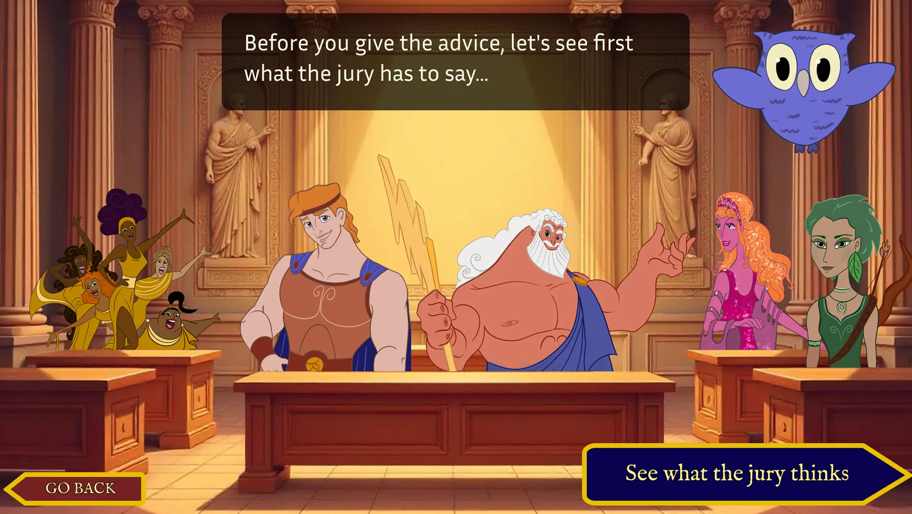
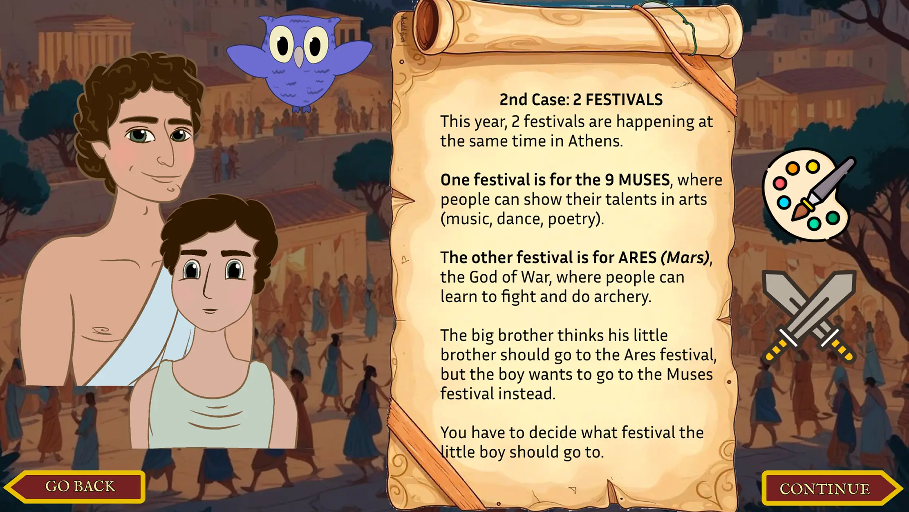
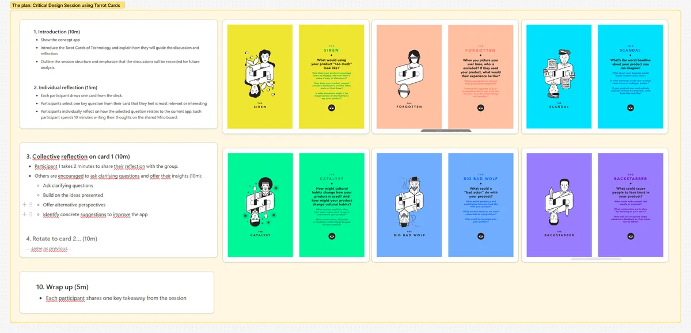

Serious Game für gesellschaftliche Wirkung
| Bachelorarbeit LMU München x USI Lugano
Was ich gemacht habe
- Ein Serious Game zum Abbau von Geschlechterstereotypen bei Kindern in Figma designt und in Unity C# entwickelt
- Eine Critical Design Session durchgeführt, mit Unterstützung meiner Betreuerin Irene Zanardi sowie Prof. Dr. Monica Landoni und 4 weiteren Forscher*innen
- Zwei Nutzer*innen-Sessions durchgeführt und ausgewertet und auf Basis der gesammelten Daten iteriert
- Die Wirksamkeit des Spiels validiert, indem ich ein forschungsbasiertes Reflexions-Kodierschema entwickelt und eine Datenanalyse durchgeführt habe
Schlagwörter
- Child-Computer Interaction
- Serious Games
- Reflexives Design & Critical Design
Mitwirkende
Für meine Bachelorarbeit habe ich ein Serious Game für Kinder gestaltet und umgesetzt, das zur Reflexion über Geschlechterstereotype anregt. Sozio-politische digitale Tools sind trotz ihres großen Potenzials für sozialen Wandel ein stark unerforschtes Feld innerhalb der Child–Computer Interaction (CCI). Das Projekt entstand in Zusammenarbeit zwischen der LMU München und der USI Lugano (Erasmus-Universität) und verband akademische Forschung mit praktischem Design und Entwicklung. Das Spiel wurde in Figma gestaltet, in Unity (C#) gebaut und durch kontinuierliche Forschung, Gespräche mit CCI-Forscher*innen und zwei Nutzer*innen-Sessions mit 9 Grundschulkindern aus Lugano, Schweiz, iterativ verfeinert.



